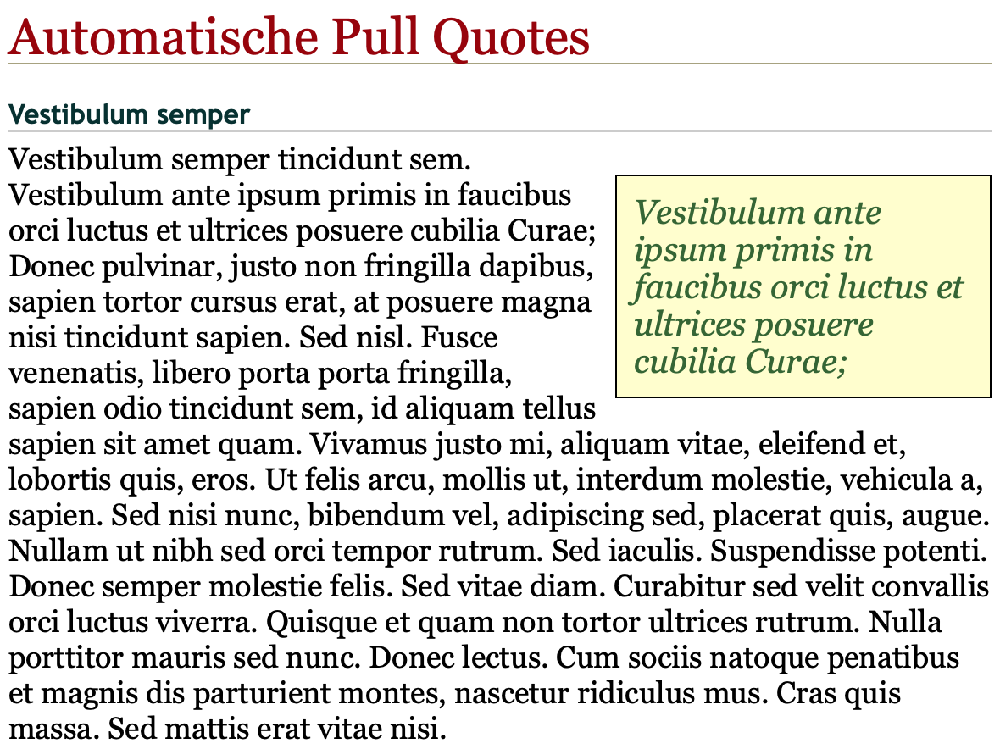
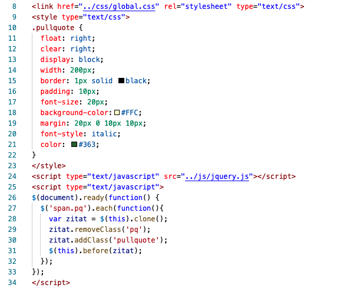
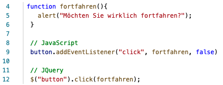
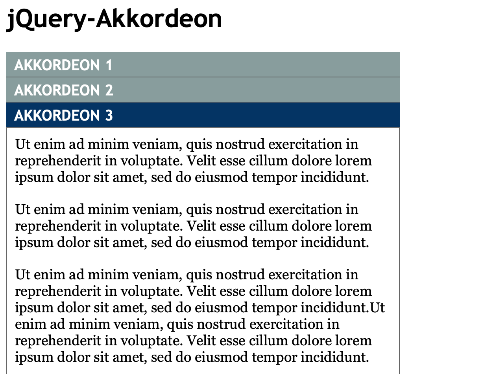
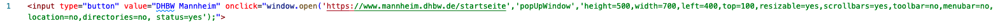

Anonyme Funktionen
Anonyme Funktionen sind Fuktionen ohne Namen, die sofort ausgeführt werden. Diese werden oft eingesetzt, wenn eine Funktion nur in einem bestimmten Bereich benötigt wird. Zudem werden anonyme Funktionen auch oft an "höhere" Funktionen übergeben, und somit ihr Gültigkeitsbereich innerhalb der höheren Funktion liegt. Anonyme Funktionen können:
- in Variablen gespeichert werden,
- innerhalb anderer Funktionen stehen,
- oder auch im Konstruktor initialisiert werden.
Als Beispiel ist hier der Code für das Speichern einer anonymen Funktion innerhalb einer Variable:

Die anonyme Funktion kann durch den Variablennamen gefolgt von () aufgerufen werden.
Übung: Pull Quotes
In diese Übung ging es darum durch Pull Quotes den text zu verschönern und gleichzeitig wichtige Aussagen, wie unten sichtbar, herauszustellen.

Dabei wir CSS und jQuery verknüpft, um dies möglich zu machen. Zunächst folgt der CSS-Code und JavaScript-Code:

Wie im oberen Teil de Codes zu erkennen ist, wird mit CSS unter .pullquote definiert wie eine Pull Quote aussehen soll. Im JavaScript-Code wird daraufhin definiert wie eine Pull Quote erzeugt werden kann.Wichtig dabei sind die Zeilen 29 und 30. dabei wird pq durch pullqoute ersetzt. Dies wird interessant, wenn wir eine Pull Quote in HTML einfügen:

Hierbei wird der Text, der eine Pull Quote werden soll, in ein span-Tag mit der Klasse pq gepackt. JQuery erkennt diese Klasse und weiss dadurch, dass eine Pull Quote erwünscht ist und greift somit auf die CSS-Vorlage für eine Pull Quote zurück.
JavaScript und jQuery Events
JavaScript-Programme unterscheiden sich in die Bestandteile des asynchronen (wird ausgeführt wenn etwas schief geht) und synchronen (wird beim Aufruf eines Scriptes ausgeführt)Codes. Teil des synchronen Codes ist es dabei der Ausführungsumgebung bekanntzugeben für welche Geschehnisse sich das Script interessiert, damit die entsprecchende Reaktion gestartet werden kann.
Die in der Vorlesung behandelte Seite events.html verdeutlicht dabei wie viele Events stattfinden. Die Mausbewegung, das Klicken, alles schießt ein Event. Dabei muss immer darauf geachtet werden was passiert, damit der JavaScript-Code im Falle sofort antworten kann.
Mouse-Events
- Click-Event - wird ausgeführt sobald die Maus geklickt wird
- DoubleClick-Event - wird bei einem Doppelklick ausgeführt
- Mousedown-Event - Moment, in dem die Maus geklickt aber noch nicht losgelassen wurde
- Mouseup-Event - Moment, wenn die Taste wieder losgelassen wird
- Mouseover-Event - wird ausgelöst, sobald sich die Maus über eine Seite bewegt
Aber nicht nur die Aktionen der Maus lösen Events aus...
Formular-Events
Events in HTML-Formularen sind dabei passend zu ihren eigentlichen Funktionen: submit, reset, change, focus und blur. Als Beispiel wird das submit-Event ausgelöst, wenn das Formular abgesendet wird. dadurch ist es noch möglich Validierungen druchführen bevor die Daten zum Server gesendet werden. Ein reset-Event wird durch das Neuladen einer Seite ausgelöst. chnage-Event wird hingegen ausgelöst, wenn eine Änderung vom Nutzer getätigt wird. Also wenn sich zum Beispiel der Inhalt eines Textfeldes ändert. Die Events focus und blur sind Gegenteile. Wenn zum Beispiel ein betsimmtes Feld angeklickt wird so wird dieses in den Fokus gesetzt und alles darum ist dann "blur".
Inline Events
Events können auf unterschiedliche Weisen genutzt werden. Ein Beispiel ist das folgende onClick-Event. Hier wird nachdem sie den Button klicken sofort eine Reaktion gegeben:
Eine weitere Methode ist das direkte Übergeben einer Referenz auf eine selbstgeschriebenen Funktion an den Event Handler. Bei den bis jetzt vorgstellten Möglichkeiten entsteht jedoch das Problem, dass wenn eine Zuweisung mehrfach durchgeführt wird, die erste Zuweisung gelöscht wird. Wenn also verschiedene Funktionen mit dem gleichen Event ausgelöst werden sollen, ist dies nicht möglich. Die Lösung dafür ist der Event-Listener. Doch zuerst...
"Traditionelles Event"
Im traditionellen Modell können Event-Handler durch Skripte hinzugefügt oder entfernt werden. Wie beim Inline-Modell kann für jedes Ereignis nur ein Event-Handler registriert werden. Das Ereignis wird hinzugefügt, indem der Name des Handlers der Ereigniseigenschaft des Elementobjekts zugewiesen wird. Um einen Event-Handler zu entfernen, setzt man die Eigenschaft einfach auf null.
Event-Listener
Event-Listener achten dabei sind dabei an bestimmte Events gebunden und ermöglichen somit die gezielte Nutzung von Events und das Vermeiden von Überschriebungen der Zuweisungen. Diese Event-Listener funktionieren dabei mit jQuery und sehen im Code wie folgt aus:

Fortgeschrittenes Eventmanagement mittels bind()
Die bind()-Methode ist ein weiterer Weg mit Events umzugehen. Sie ermöglicht es zusätzliche Daten an die Event-Handler-Funktion zu übergeben. Dies hat den Vorteil, dass jenachdem welches Event ausgelöst wurde, eine einzige Funktion auf unterschiedliche Weisen reagieren kann. Dabei sieht die Syntax wie folgt aus:
$ (`#selektor‘).bind(`click`, daten, funktionsName);
Das erste Argument ist der String mit dem Eventnamen. Das zweite Argument enthält die Daten, die an die Funktion übergeben werden sollen. Das dritte Argument ist eine andere Funktion, die an die bind()-Funktion übergeben.
Übung: Akkordeon
In der Akkordeon ging es darum mit Hilfe von jQuery Boxen zu schaffen, deren Inhalt sich öffnen und auch schließen lässt. Der folgende Screenshot zeigt wie das Ergebnis aussehen sollte. Dabei sollten beim Start die ersten beiden Akkordeon-Boxen geschlossen und Akkordeon 3 geöffnet sein. Zusätzlich ergibt sich durch Klicken die Möglichkeit die einzelnen Boxen entweder zu öffnen oder schließen.

Übung: Pop-Up Fenster
Die Übung Pop-Up Fenster zeigt wie durch das Klicken auf ein Button eine neue Webseite über ein Pop-Up Fenster geöffnet wird. Der unten folgende Button öffnet ein Pop-Up Fenster.
Ein Pop-Up Fenster kann mit diesem Code geschaffen werden:
